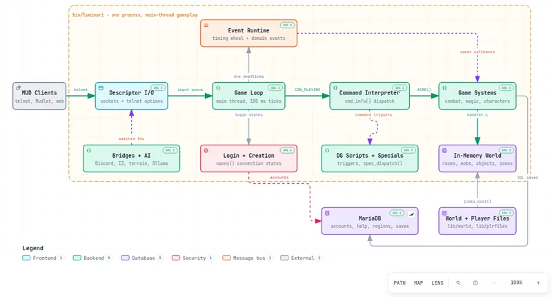
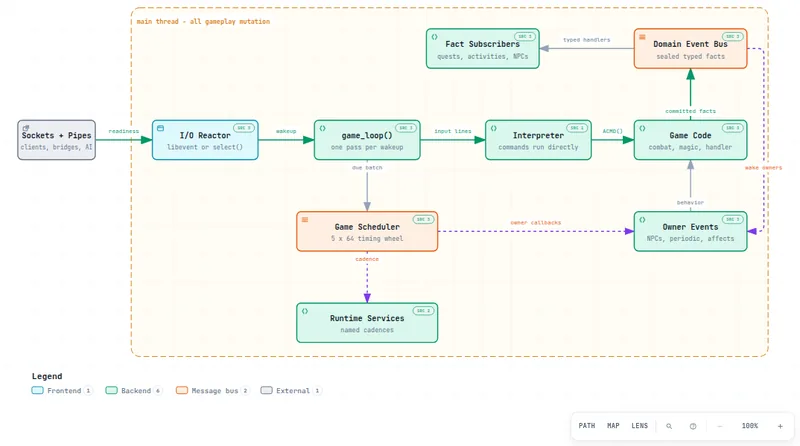
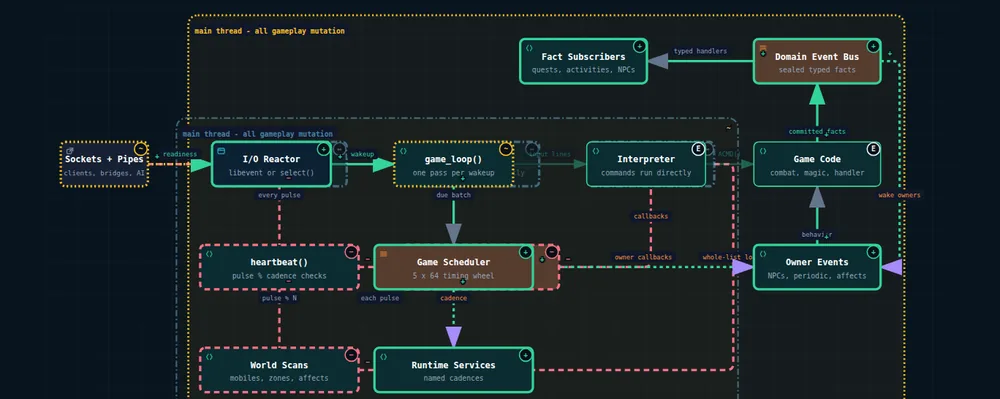
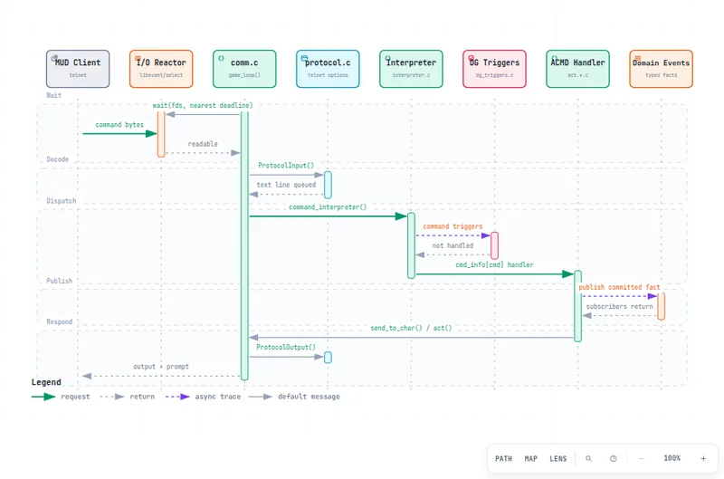
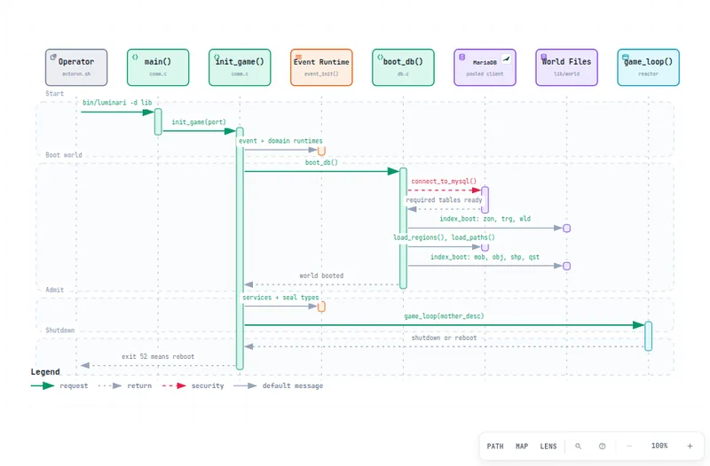
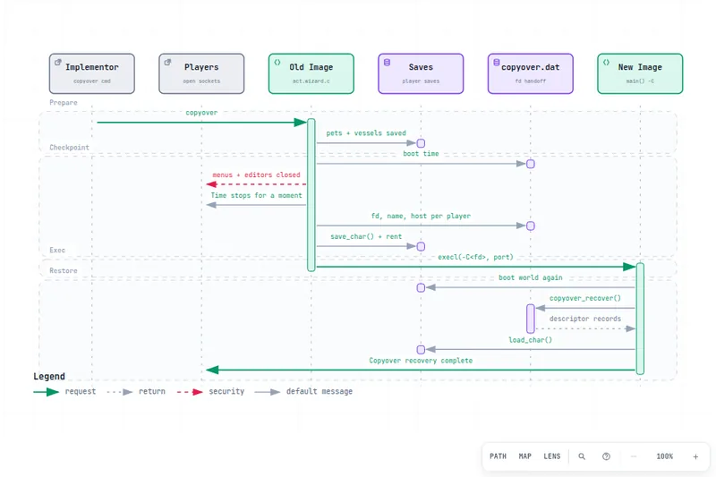

Pinned to real lines
Architecture nodes cite files and line ranges at a fixed commit. Archify re-reads each blob from Git before rendering, so a wrong path or line fails the build.
LuminariMUD · Architecture Atlas
Ten interactive maps of how LuminariMUD boots, turns a typed command into a change in the world, schedules timed work, survives a hot reboot, and saves what matters. Each one is compiled from a typed source, validated, and checked in a real browser.
From the whole process to the refactor that reshaped it.
Components, boundaries, and the code behind every box.

What runs inside bin/luminari, and where does state live?
12 components · 13 relationships · 5 guided views
How do the reactor, scheduler, and domain events share the main thread?
10 components · 11 relationships · 4 guided views
The pulse-driven heartbeat() loop of August 2026 compared with the event-driven core that replaced it, as Before, Delta, and After views with a step-by-step review.
14added8removed4changed Review the change →Who calls whom, in order, and what comes back.

What happens between a typed command and the next prompt?
8 participants · 14 messages · 4 guided views
In what order does the server boot, and how does it exit or reboot?
8 participants · 14 messages · 4 guided views
How does the server replace its own binary without dropping players?
6 participants · 13 messages · 3 guided viewsEvery state, the transitions between them, and the ways out.
Where state is written, and how a change reaches CI.
Keyboard shortcuts work on every page.
Three separate checks, with receipts in the README.
Architecture nodes cite files and line ranges at a fixed commit. Archify re-reads each blob from Git before rendering, so a wrong path or line fails the build.
Each page comes from a JSON source in sources/ and passed schema, routing,
label-clearance, and readability checks before it was written.
Headless Chromium measured every page at four desktop sizes in both themes, and the screenshots were reviewed for crossings, masked labels, and balance.